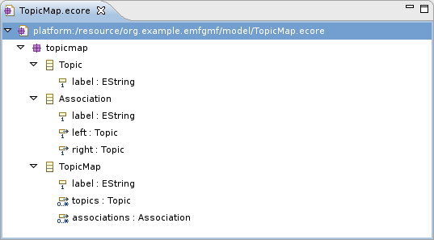
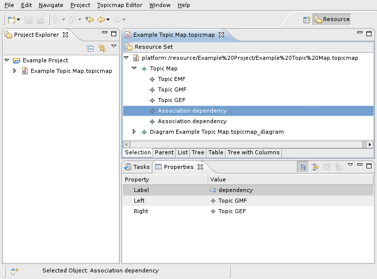
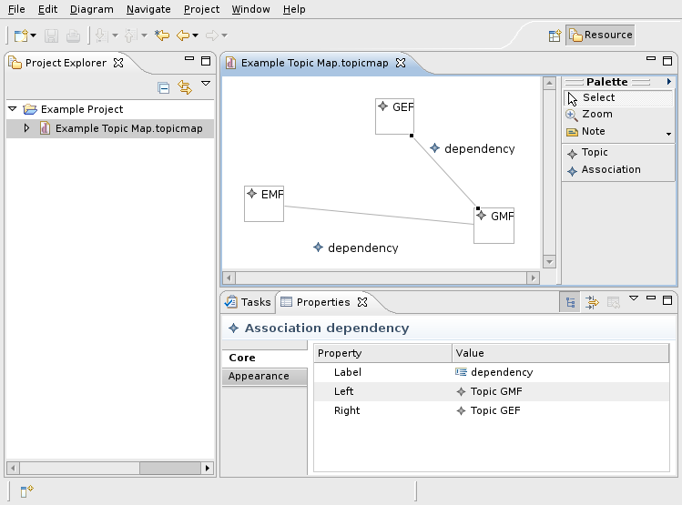
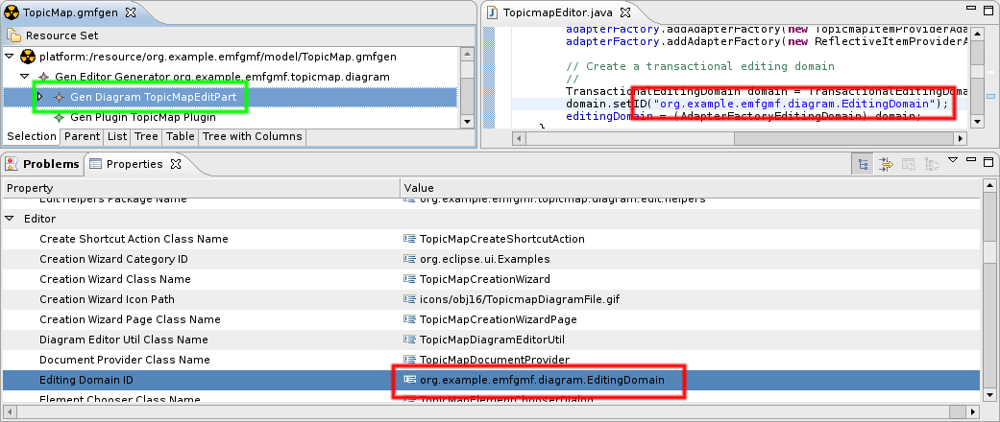
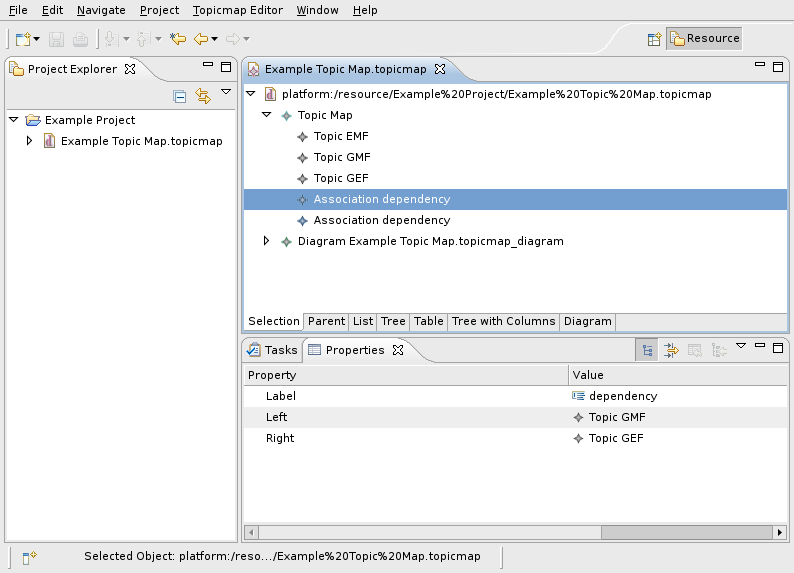
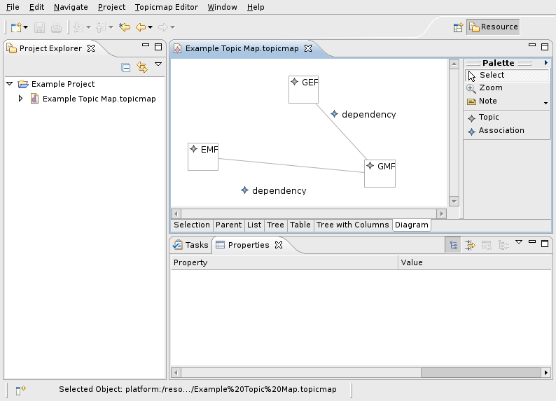
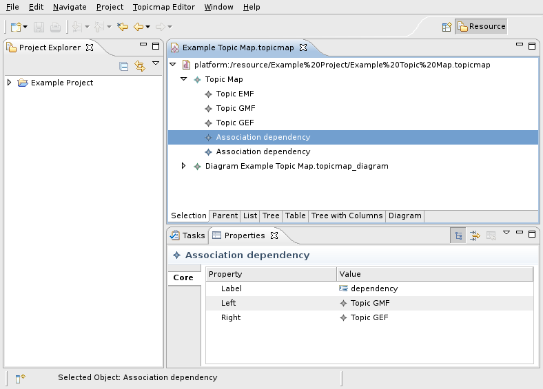
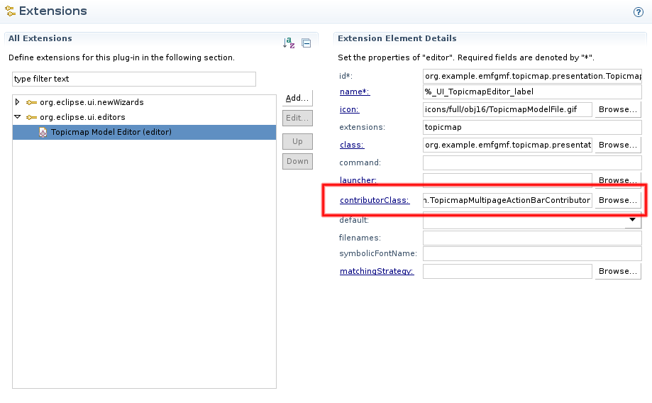
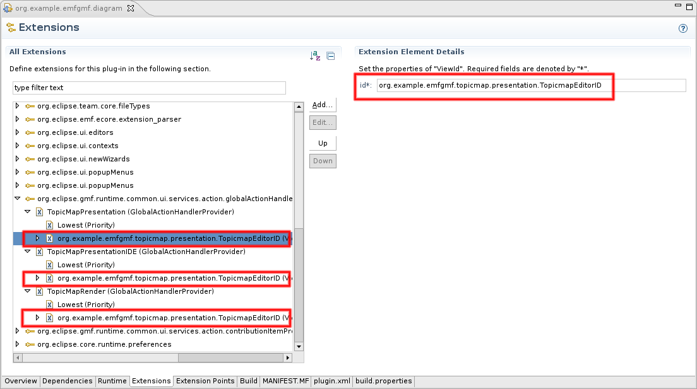
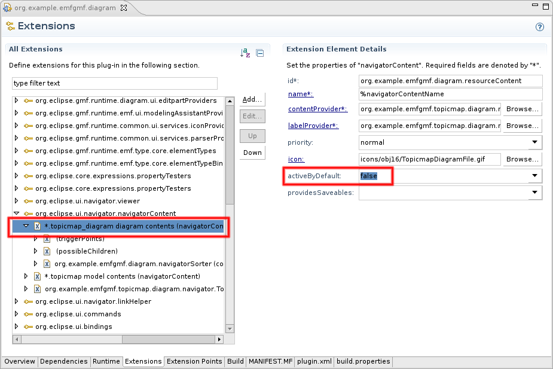

Table of Contents
- Introduction
- Setting the Stage
- Upgrading the Editing Domain
- Extending the Editor Input
- Dissecting the EMF Editor
- Selection Handling
- Combining the Editors
- Taming the Properties
- Completing Menus and Toolbars
- Fixing Edit Menu Actions
- Creating the Diagram
- Fixing the Resource Navigator
- Want some RCP with that?
- Miscellaneous Notes
- Conclusion
- Acknowledgements
Introduction
Both the Eclipse Modeling Framework (EMF) and the Graphical Modeling Framework (GMF) are capable of generating editor plug-ins. However, there are many use cases where it's not a question of traditional widget-based editor or graphical editor—a joint solution that provides both widget-based and graphical editing capabilities is called for. Unfortunately, it's not a trivial task to combine the generated editors. This article walks you through the steps required to create an integrated editor. Although we start off from scratch, you should have some basic knowledge about how both EMF and GMF work.
This article uses a simple example model—about the smallest working example possible—shown in the following image.

The main object stored in a file is a topic map that consists of an arbitrary number of topics and associations. Both topics and associations are labeled. An association always connects two topics.
If you just want to see the combined editor in action, you can grab an archive containing the result of the actions described below.
Setting the Stage
Before we can try to integrate the generated editors, we first need to setup some playground projects. This is covered by the documentation provided for EMF and GMF, so let's not get lost in the details. You can use the archived example projects provided with this article, they contain the models used in this article as well as the generated plug-ins in an "untainted" state. If you prefer to setup your environment manually, just follow this checklist.
- Create an empty EMF project and name it org.example.emfgmf.
- Create a new Ecore model as shown above or use the archive containing the models used in this article. This archive also contains the GMF models to save you some work.
- Create a generator model for the Ecore model. Remember to adjust the package properties.
- Generate the model, edit and editor plug-ins. There's no need to generate the test classes, but it doesn't hurt either.
- Create a Graphical Definition and a Tooling Definition using the wizard.
- Create a Mapping Model using the wizard. You'll have to adapt the label mappings if you use the sample model provided since the wizard doesn't generate sensible values here.
- Create a GMF generator model. Change the property Same File for Diagram And Model to true and change diagram file extension to match the domain file extension - if you skip this, things will get a bit more complicated later.
- Generate the diagram editor.
You can now launch an Eclipse runtime with the generated plug-ins. Create a project and some topic map to play with. Try editing your topic map with both the tree-like EMF editor and the GMF-based diagram editor and watch the results.


Now, let's put these two editors together...
Upgrading the Editing Domain
Both the EMF-based and the GMF-based editor use an EditingDomain to handle the model objects generated from the Ecore model. To allow for simultaneous modifications of the same model instances in the two editor areas, we have to modify generated code to share the same EditingDomain instance across both the EMF-based and the GMF-based editor.
The GMF-based diagram editor uses a TransactionalEditingDomain while the EMF editor "only" requires an AdapterFactoryEditingDomain. In order to combine the editors, we have to "upgrade" the EMF editor to create a TransactionalEditingDomain that can then be passed along to the diagram editor. Open the TopicmapEditor source and adapt the generated implementation of initializeEditingDomain() as shown in the following code:
protected void initializeEditingDomain() {
// Create an adapter factory that yields item providers.
//
adapterFactory = new ComposedAdapterFactory(ComposedAdapterFactory.Descriptor.Registry.INSTANCE);
adapterFactory.addAdapterFactory(new ResourceItemProviderAdapterFactory());
adapterFactory.addAdapterFactory(new TopicmapItemProviderAdapterFactory());
adapterFactory.addAdapterFactory(new ReflectiveItemProviderAdapterFactory());
// Create a transactional editing domain
//
TransactionalEditingDomain domain = TransactionalEditingDomain.Factory.INSTANCE.createEditingDomain();
domain.setID("org.example.emfgmf.diagram.EditingDomain");
// Add a listener to set the most recent command's affected objects to be the selection of the viewer with focus.
//
domain.getCommandStack().addCommandStackListener(
new CommandStackListener() {
public void commandStackChanged(final EventObject event) {
getContainer().getDisplay().asyncExec
(new Runnable() {
public void run() {
firePropertyChange(IEditorPart.PROP_DIRTY);
// Try to select the affected objects.
//
Command mostRecentCommand = ((CommandStack) event.getSource()).getMostRecentCommand();
if (mostRecentCommand != null) {
setSelectionToViewer(mostRecentCommand.getAffectedObjects());
}
if (propertySheetPage != null && !propertySheetPage.getControl().isDisposed()) {
propertySheetPage.refresh();
}
}
});
}
});
editingDomain = (AdapterFactoryEditingDomain) domain;
}
Don't forget to set the @generated tag to an arbitrary value to prevent your changes from being overwritten.
Also, in order for this to work, the org.example.emfgmf.editor plugin needs another dependency to org.eclipse.emf.transaction.
Make sure that the ID used to initialize the editing domain matches the editing domain ID specified in the GMF generator model (select the Gen Diagram node as shown in the screenshot below).

Extending the Editor Input
We have already modified the TopicmapEditor to create a transactional EditingDomain instance. The next step is to pass this instance to each page of the multi-page editor. An EditorPart receives its input using some descendant of IEditorInput, usually a FileEditorInput. In our use case, we need to include a reference to our central EditingDomain instance. In general, any implementation of IEditorInput could be used as input object for the EditorParts contained in the multi-page editor. Fortunately, the GMF code base already contains a convenient wrapper for our task: the FileEditorInputProxy.
While it is tempting to simply replace the editor's input with the wrapped-up input, this should be avoided since it causes trouble e. g. with the problem markers. As a rule of thumb, an editor should always return the same input object that it was initialized with or that was passed to it, no matter what happens internally. In our case, we just add an attribute of type FileEditorInputProxy to the TopicmapEditor and add a method for the lazy initialization of this attribute:
protected IEditorInput getWrappedInput() {
if (wrappedInput == null) {
if (getEditorInput() instanceof IFileEditorInput) {
wrappedInput = new FileEditorInputProxy((IFileEditorInput)getEditorInput(),
(TransactionalEditingDomain) getEditingDomain());
} else {
wrappedInput = getEditorInput();
}
}
return wrappedInput;
}
You will note that references to FileEditorInputProxy can not be resolved at this point - simply because this class is provided by the GMF, and the EMF generated editor plug-in does not know about the GMF yet. We now have two means to resolve this issue: either add the dependencies to the EMF editor plug-in or "inherit" the dependencies from the GMF editor plug-in. Let's take the second approach: Open the org.example.emfgmf.editor plug-in manifest and add a dependency to org.example.emfgmf.diagram. Then open the org.example.emfgmf.diagram plug-in manifest and set the flag reexport this dependency for all org.eclipse.gmf.* plug-ins.
We also have to adapt the generated class TopicMapDocumentProvider. You may have noted that this class refers to FileEditorInput in many places, and this leads to trouble as soon as you pass it a FileEditorInputProxy. Fortunately we can simply replace FileEditorInput with IFileEditorInput in the entire class except for the instantiation in handleElementMoved(). We then have to tell the TopicMapDocumentProvider not to create its own Editing Domain, but to use the one provided by the FileEditorInputProxy. The easiest way to do this is to adapt the method createEmptyDocument():
protected IDocument createEmptyDocument() {
return createEmptyDocument(null);
}
protected IDocument createEmptyDocument(Object input) {
DiagramDocument document = new DiagramDocument();
if (input instanceof FileEditorInputProxy) {
FileEditorInputProxy proxy = (FileEditorInputProxy) input;
document.setEditingDomain(proxy.getEditingDomain());
} else {
document.setEditingDomain(createEditingDomain());
}
return document;
}
In addition to this, we have to change the call to createEmptyDocument() in createDocument():
protected IDocument createDocument(Object element) throws CoreException {
//...
IDocument document = createEmptyDocument(element);
setDocumentContent(document, (IEditorInput) element);
setupDocument(element, document);
return document;
}
We won't be able to see the effects of these changes until later, though.
Dissecting the EMF Editor
The TopicmapEditor generated by the EMF is derived from MultiPageEditorPart, and this class already provides means to handle multiple editor pages. Unfortunately for us, the generated example creates the editor pages using anonymous subclasses of ViewerPane. This means that the TopicmapEditor itself has to override some methods of the MultiPageEditorPart that are intended to save the developer of descendants some work. While this is perfectly acceptable for a generated example, it becomes a problem when adding the GMF generated editor to the TopicmapEditor. Our next task will therefore be to split the generated editor into separate EditorPart subclasses. We will do so by creating subclasses of EditorPart that will be responsible for one page each. Since we have six pages to deal with, it's worth introducing a common superclass named TopicmapEditorPart that extends EditorPart and implements IMenuListener. We make this class abstract and add some common method implementations:
public abstract class TopicmapEditorPart extends EditorPart implements IMenuListener, IEditingDomainProvider {
protected TopicmapEditor parentEditor;
public TopicmapEditorPart(TopicmapEditor parent) {
super();
this.parentEditor = parent;
}
protected static String getString(String key) {
return TopicMapEditorPlugin.INSTANCE.getString(key);
}
public EditingDomain getEditingDomain() {
return parentEditor.getEditingDomain();
}
protected BasicCommandStack getCommandStack() {
return ((BasicCommandStack)getEditingDomain().getCommandStack());
}
protected AdapterFactory getAdapterFactory() {
return ((AdapterFactoryEditingDomain) ((FileEditorInputProxy)getEditorInput()).getEditingDomain()).getAdapterFactory();
}
protected void createContextMenuFor(StructuredViewer viewer) {
MenuManager contextMenu = new MenuManager("#PopUp");
contextMenu.add(new Separator("additions"));
contextMenu.setRemoveAllWhenShown(true);
contextMenu.addMenuListener(this);
Menu menu= contextMenu.createContextMenu(viewer.getControl());
viewer.getControl().setMenu(menu);
getSite().registerContextMenu(contextMenu, new UnwrappingSelectionProvider(viewer));
int dndOperations = DND.DROP_COPY | DND.DROP_MOVE | DND.DROP_LINK;
Transfer[] transfers = new Transfer[] { LocalTransfer.getInstance() };
viewer.addDragSupport(dndOperations, transfers, new ViewerDragAdapter(viewer));
viewer.addDropSupport(dndOperations, transfers, new EditingDomainViewerDropAdapter(getEditingDomain(), viewer));
}
@Override
public void doSave(IProgressMonitor monitor) {
// nothing to do here - this is handled by the parent editor
}
@Override
public void doSaveAs() {
// nothing to do here - this is handled by the parent editor
}
@Override
public void init(IEditorSite site, IEditorInput input) throws PartInitException {
setSite(site);
setInput(input);
}
@Override
public boolean isDirty() {
return getCommandStack().isSaveNeeded();
}
@Override
public boolean isSaveAsAllowed() {
return true;
}
public void menuAboutToShow(IMenuManager manager) {
// pass the request to show the context menu on to the parent editor
((IMenuListener)parentEditor.getEditorSite().getActionBarContributor()).menuAboutToShow(manager);
}
public abstract void setInput(Object input);
}
Now that we've got the base class, we can create the EditorPart derivates to represent the pages of the editor. Each of the editor pages becomes a separate class, and since these classes look rather similar, we'll only take a look at one of them as an example:
public class TableTreeEditorPart extends TopicmapEditorPart {
protected TreeViewer viewer;
public TableTreeEditorPart(TopicmapEditor parent) {
super(parent);
}
@Override
public void createPartControl(Composite parent) {
viewer = new TreeViewer(parent, SWT.NONE);
Tree tree = viewer.getTree();
tree.setLayoutData(new FillLayout());
tree.setHeaderVisible(true);
tree.setLinesVisible(true);
TreeColumn objectColumn = new TreeColumn(tree, SWT.NONE);
objectColumn.setText(getString("_UI_ObjectColumn_label"));
objectColumn.setResizable(true);
objectColumn.setWidth(250);
TreeColumn selfColumn = new TreeColumn(tree, SWT.NONE);
selfColumn.setText(getString("_UI_SelfColumn_label"));
selfColumn.setResizable(true);
selfColumn.setWidth(200);
viewer.setColumnProperties(new String [] {"a", "b"});
viewer.setContentProvider(new AdapterFactoryContentProvider(getAdapterFactory()));
viewer.setLabelProvider(new AdapterFactoryLabelProvider(getAdapterFactory()));
createContextMenuFor(viewer);
getEditorSite().setSelectionProvider(viewer);
}
@Override
public void setFocus() {
viewer.getTree().setFocus();
}
@Override
public void setInput(Object input) {
viewer.setInput(input);
}
}
In order to get the ParentEditorPart working, we have to extract the inner class ReverseAdapterFactoryContentProvider from the generated TopicmapEditor class - fortunately, with the refactoring capabilites of Eclipse, that's only a matter of a few mouse clicks.
These classes are then instantiated by the TopicmapEditor in its method createPages() - this is also where the code to create the contents of each editor part originates from. The generated attributes that hold the viewers are replaced by attributes that keep the editor parts. The instantiation procedure now looks like this:
public void createPages() {
// Creates the model from the editor input
//
createModel();
// Only creates the other pages if there is something that can be edited
//
if (!getEditingDomain().getResourceSet().getResources().isEmpty() &&
!(getEditingDomain().getResourceSet().getResources().get(0)).getContents().isEmpty()) {
try {
int pageIndex;
// Create a page for the selection tree view.
//
selectionEditorPart = new SelectionEditorPart(this);
pageIndex = addPage(selectionEditorPart, getWrappedInput());
setPageText(pageIndex, getString("_UI_SelectionPage_label"));
selectionEditorPart.setInput(getEditingDomain().getResourceSet());
// Create a page for the parent tree view.
//
parentEditorPart = new ParentEditorPart(this);
pageIndex = addPage(parentEditorPart, getWrappedInput());
setPageText(pageIndex, getString("_UI_ParentPage_label"));
// This is the page for the list viewer
//
listEditorPart = new ListEditorPart(this);
pageIndex = addPage(listEditorPart, getWrappedInput());
setPageText(pageIndex, getString("_UI_ListPage_label"));
// This is the page for the tree viewer
//
treeEditorPart = new TreeEditorPart(this);
pageIndex = addPage(treeEditorPart, getWrappedInput());
setPageText(pageIndex, getString("_UI_TreePage_label"));
// This is the page for the table viewer.
//
tableEditorPart = new TableEditorPart(this);
pageIndex = addPage(tableEditorPart, getWrappedInput());
setPageText(pageIndex, getString("_UI_TablePage_label"));
// This is the page for the table tree viewer.
//
tableTreeEditorPart = new TableTreeEditorPart(this);
pageIndex = addPage(tableTreeEditorPart, getWrappedInput());
setPageText(pageIndex, getString("_UI_TreeWithColumnsPage_label"));
} catch (PartInitException e) {
// add some error handling for production-quality coding
e.printStackTrace();
}
getSite().getShell().getDisplay().asyncExec
(new Runnable() {
public void run() {
setActivePage(0);
}
});
}
// ...
}
Having entrusted the handling of the editor parts to the MultipageEditorPart, we can remove the attribute currentViewerPane and the methods setCurrentViewerPane() and setFocus(). The reimplementation of isDirty() can also be removed.
Selection Handling
Now we have split up the generated editor, but this has disrupted the generated coding for selection handling - we have to clean this up before we move on. The MultiPageEditorPart already comes with a mechanism to handle selection changes (see classes MultiPageEditorSite and MultiPageSelectionProvider), but this mechanism is not used by the generated coding - yet.
First we add a new attribute named selectionProvider of type MultiPageSelectionProvider to the TopicmapEditor and make the constructor of the editor class initialize this attribute (passing itself as argument). Then we change the method init() to set this instance as a site-wide selection provider instead of the editor itself. The TopicmapEditor itself now no longer needs to be a selection provider, so we can remove the interface implementation of ISelectionProvider along with the generated attributes selectionChangedListener, selectionChangedListeners and editorSelection as well as the generated methods addSelectionChangedListener(), removeSelectionChangedListener(), getSelection() and setSelection(). Note that setSelection() contains a line to modify the status line manager - we'll move this call into a separate listener that is initialized by the constructor:
public TopicmapEditor() {
super();
initializeEditingDomain();
selectionProvider = new MultiPageSelectionProvider(this);
selectionProvider.addSelectionChangedListener(new ISelectionChangedListener() {
public void selectionChanged(SelectionChangedEvent event) {
setStatusLineManager(event.getSelection());
}
});
}
We still need to rewrite several references to the methods we just removed. handleActivate() contains a call to setSelection() that can easily be replaced by a call to the selection provider:
protected void handleActivate() {
// Recompute the read only state.
//
if (editingDomain.getResourceToReadOnlyMap() != null) {
editingDomain.getResourceToReadOnlyMap().clear();
// Refresh any actions that may become enabled or disabled.
//
selectionProvider.setSelection(selectionProvider.getSelection());
}
// ...
}
We can now adapt the method setCurrentViewer() and throw out everything that's concerned with selection handling:
public void setCurrentViewer(Viewer viewer) {
if (currentViewer != viewer) {
currentViewer = viewer;
}
}
Another method that requires a bit of attention is handleContentOutlineSelection():
public void handleContentOutlineSelection(ISelection selection) {
if (!selection.isEmpty() && selection instanceof IStructuredSelection) {
List selectedElements = ((IStructuredSelection)selection).toList();
if (getActiveEditor() == selectionEditorPart) {
// If the selection viewer is active, we want it to select the same selection as this selection.
//
selectionProvider.setSelection(new StructuredSelection(selectedElements));
} else {
// For any other viewer, set the input directly.
//
((TopicmapEditorPart)getActiveEditor()).setInput(selectedElements.get(0));
}
}
}
Combining the Editors
Okay - now that we've completed the preparations (well, most of), taping the editors together is surprisingly easy. We simply add a new attribute named diagramEditor of type TopicMapDiagramEditor to the TopicmapEditor and then extend the method createPages() to include the diagram editor in the creation process:
public void createPages() {
// ...
try {
int pageIndex;
//...
// This is the page for the graphical diagram viewer.
//
diagramEditor = new TopicMapDiagramEditor();
pageIndex = addPage(diagramEditor, getEditorInput());
setPageText(pageIndex, "Diagram");
} catch (PartInitException e) {
// add some error handling for production-quality coding
e.printStackTrace();
}
// ...
}
We also have to modify handleContentOutlineSelection() again in order to keep the outline selection working:
public void handleContentOutlineSelection(ISelection selection) {
if (!selection.isEmpty() && selection instanceof IStructuredSelection) {
List selectedElements = ((IStructuredSelection)selection).toList();
if (getActiveEditor() == selectionEditorPart) {
// If the selection viewer is active, we want it to select the same selection as this selection.
//
selectionProvider.setSelection(new StructuredSelection(selectedElements));
} else if (getActiveEditor() == diagramEditor) {
// If the diagram viewer is active, we need to map the selection to the corresponding EditParts.
//
ArrayList<Object> selectionList = new ArrayList<Object>();
for(Object selectedElement: selectedElements) {
if (selectedElement instanceof EObject) {
String elementID = EMFCoreUtil.getProxyID((EObject) selectedElement);
selectionList.addAll(diagramEditor.getDiagramGraphicalViewer().findEditPartsForElement(elementID,
IGraphicalEditPart.class));
}
selectionProvider.setSelection(new StructuredSelection(selectionList));
}
} else {
// For any other viewer, set the input directly.
//
((TopicmapEditorPart)getActiveEditor()).setInput(selectedElements.get(0));
}
}
}
Et voilà - we've got the two editors combined in one single multi-page editor.


You may want to disable the standalone diagram editor at this point - simply open the plugin.xml of the diagram editor and remove the extension declaring the editor (extension point org.eclipse.ui.editors). Note that the pre-packaged examples still contain this extension so that you can compare the generated diagram editor and the integrated editors more easily.
Although the integrated editor already looks quite impressive, there are several important issues to fix.
- The properties view refuses to show any properties while the graphical editor is active.
- The menu items and toolbars of the graphical editor are still missing.
- Some of the actions in the Edit menu (like Cut, Copy, Paste and Delete) don't work.
- When creating a new file, the diagram is missing.
- When expanding the topic map files in the resource navigator view, a ClassCastException is thrown.
Taming the Properties
The reason for the properties view not behaving as desired is simply that EMF uses the default properties mechanism while GMF already uses the tabbed properties view. If you're not familiar with the tabbed properties view, there's an excellent article available that also gives a hint to solve our current problem. In order to use the tabbed properties for both the EMF and GMF generated editor, we have to change the TopicmapEditor class so that it implements ITabbedPropertySheetPageContributor and have the method getContributorId() return diagramEditor.getContributorId(). We also need to adapt getPropertySheetPage() to create a PropertiesBrowserPage:
public IPropertySheetPage getPropertySheetPage() {
if (propertySheetPage == null) {
propertySheetPage = new PropertiesBrowserPage(this) {
public void setActionBars(IActionBars actionBars) {
super.setActionBars(actionBars);
getActionBarContributor().shareGlobalActions(this, actionBars);
}
};
}
return propertySheetPage;
}
Note that you also have to change the type of propertySheetPage. If you try out the implementation so far, you will notice that the diagram editor now works, but the EMF editors always show Properties not available in the view. The reason for this is that we haven't yet told the properties framework to handle our generated model classes. To do so, open the diagram editor plugin.xml file, locate the extension to org.eclipse.ui.views.properties.tabbed.propertySections and extend the list of input object types:
<extension point="org.eclipse.ui.views.properties.tabbed.propertySections">
<propertySections contributorId="org.example.emfgmf.diagram">
<!-- ... -->
<propertySection
id="property.section.domain"
tab="property.tab.domain"
class="org.example.emfgmf.topicmap.diagram.sheet.TopicMapPropertySection">
<input type="org.eclipse.gmf.runtime.notation.View"/>
<input type="org.eclipse.gef.EditPart"/>
<input type="org.example.emfgmf.topicmap.TopicMap"/>
<input type="org.example.emfgmf.topicmap.Topic"/>
<input type="org.example.emfgmf.topicmap.Association"/>
</propertySection>
</propertySections>
</extension>
Granted, this is not the nicest way to solve the problem, but it does the trick: We now have tabbed properties throughout the editor.

Completing Menus and Toolbars
In order to get the menu and toolbar contributions working, we need two auxiliary classes. The first one is TopicmapMultipageActionBarContributor. This is an implementation of the interface IEditorActionBarContributor that will be used as an action bar contributor for the entire multi-page editor. This implementation is basically a composite action bar contributor that is responsible for enabling and disabling the actions contributed by different aggregated subcontrollers when switching between editor pages. This implementation is rather generic and could be used for other multi-page editors with small modifications. In our case, the TopicmapMultipageActionBarContributor will handle the switching between two sets of actions contributed by the TopicmapActionBarContributor and the TopicMapDiagramActionBarContributor.
The second class - SubActionBarsExt - is a utility class for the TopicmapMultipageActionBarContributor. It is used to collect the actions contributed by subordinate action bar contributors.
We can simply place these files in the generated editor package; they are just not inlined in this article because of their size. Next, we need to adapt two of the existing methods to access the generated TopicmapActionBarContributor properly using the newly created TopicmapMultipageActionBarContributor. In TopicmapEditor, we change getActionBarContributor() as shown below:
public EditingDomainActionBarContributor getActionBarContributor() {
return (TopicmapActionBarContributor) ((TopicmapMultipageActionBarContributor) getEditorSite()
.getActionBarContributor()).getTreeSubActionBars()
.getContributor();
}
In TopicmapEditorPart, we have to change the implementation of menuAboutToShow() like this:
public void menuAboutToShow(IMenuManager manager) {
// pass the request to show the context menu on to the parent editor
((TopicmapActionBarContributor) ((TopicmapMultipageActionBarContributor) parentEditor
.getEditorSite().getActionBarContributor())
.getTreeSubActionBars().getContributor())
.menuAboutToShow(manager);
}
Finally, we have to register our new contributor in the plug-in manifest.

Fixing Edit Menu Actions
Another problem that arises when combining EMF and GMF generated editors is that some of the actions inside the Edit menu are provided by both editors in different ways. In order to get these actions working the way they should, two slight adjustments need to be made: Let TopicmapEditor implement the interface IDiagramWorkbenchPart and delegate the method calls to diagramEditor. Next, open the diagram editor plug-in manifest and change the extensions to org.eclipse.gmf.runtime.common.ui.services.action.globalActionHandlerProviders to point to the topicmap editor:

A cleaner way to achieve the re-registration would be to copy the entire extension to the editor plug-in manifest and set this extension to provide its implementation with a higher priority.
Creating the Diagram
When creating a new topic map file, the combined editor will now refuse to open the file because the resource contains no diagram. In order to fix this, we need to change the method performFinish() of the generated TopicmapModelWizard:
public boolean performFinish() {
try {
// Remember the file.
//
final IFile modelFile = getModelFile();
// Do the work within an operation.
//
WorkspaceModifyOperation operation =
new WorkspaceModifyOperation() {
@Override
protected void execute(IProgressMonitor progressMonitor) {
try {
// Create a resource set
//
ResourceSet resourceSet = new ResourceSetImpl();
// Get the URI of the model file.
//
URI fileURI = URI.createPlatformResourceURI(modelFile.getFullPath().toString(), true);
// Create a resource for this file.
//
Resource resource = resourceSet.createResource(fileURI);
// Add the initial model object to the contents.
//
EObject rootObject = createInitialModel();
if (rootObject != null) {
resource.getContents().add(rootObject);
}
// Create the diagram
//
Diagram diagram = ViewService.createDiagram(rootObject,
TopicMapEditPart.MODEL_ID,
TopicMapDiagramEditorPlugin.DIAGRAM_PREFERENCES_HINT);
if (diagram != null) {
resource.getContents().add(diagram);
diagram.setName(fileURI.lastSegment());
diagram.setElement(rootObject);
}
// Save the contents of the resource to the file system.
//
// ... and so on ...
This will create the diagram right after the TopicMap is created and added to the resource.
Fixing the Resource Navigator
When you try to navigate into the contents of the file (that is, try to expand it in the tree view of the resource navigator), you'll see an unhandled exception with a stack trace similar to this:
java.lang.ClassCastException: org.example.emfgmf.topicmap.impl.TopicMapImpl cannot be cast to org.eclipse.gmf.runtime.notation.View at org.example.emfgmf.topicmap.diagram.navigator.TopicMapNavigatorContentProvider.selectViewsByType(TopicMapNavigatorContentProvider.java:379) at org.example.emfgmf.topicmap.diagram.navigator.TopicMapNavigatorContentProvider.getChildren(TopicMapNavigatorContentProvider.java:188) at org.eclipse.ui.internal.navigator.extensions.SafeDelegateTreeContentProvider.getChildren(SafeDelegateTreeContentProvider.java:91) at org.eclipse.ui.internal.navigator.extensions.SafeDelegateTreeContentProvider.getChildren(SafeDelegateTreeContentProvider.java:281) at org.eclipse.ui.internal.navigator.extensions.SafeDelegateTreeContentProvider.getChildren(SafeDelegateTreeContentProvider.java:89) at org.eclipse.ui.internal.navigator.NavigatorContentServiceContentProvider.internalGetChildren(NavigatorContentServiceContentProvider.java:251) at org.eclipse.ui.internal.navigator.NavigatorContentServiceContentProvider.getChildren(NavigatorContentServiceContentProvider.java:643) [...and so on...]
This exception occurs because the diagram editor adds a content provider that does not know how to handle the classes generated by the EMF. The fix for this is simply to disable the corresponding provider in the diagram editor's plug-in manifest:

Want some RCP with that?
Until now, we've worked in a complete Eclipse workbench environment. Both EMF and GMF support generating RCP editors as well. In order to combine the generated editors in an RCP environment, a few things need to be observed - it is not sufficient to just set the properties in the EMF .genmodel and the GMF generator to RCP (although that's the first step, of course).
In the following sections we'll discuss the differences from the solution outlined above that apply to RCP applications. You should walk through the entire process for a non-RCP application at least once before attempting to try this in the RCP environment - after all, these are just the differences in the process that won't make much sense unless you know the process.
As with the workbench edition of the integrated editor, we've provided both the projects in their unmodified state, right after generation, as well as the projects in their final state.
Setting the Stage
Before we can try to integrate the generated editors, we first need to setup some playground projects. This is covered by the documentation provided for EMF and GMF, so let's not get lost in the details. You can use the
One editor or another the same?
One of the first things you'll notice when running the generated editors is that you'll see two sets of "Open" and "Open URI" actions in the file menu. However, an attempt to create an EMF-only file (using File - New - Topicmap Model) will lead to a strange error message stating that a "Diagram is not present in the resource". The reason for this is that although the file is created using the EMF wizard (and thus doesn't contain a diagram), the application tries to open the file with the GMF generated editor. This happens because in both editor plug-ins, the extensions to org.eclipse.ui.editors have the (file) extension property set to "topicmap". Remove this value from the GMF generated editor so that the RCP application will always use the EMF generated editor. While you're at it, you can also remove the extensions to org.eclipse.ui.actionSets, org.eclipse.ui.bindings and org.eclipse.ui.commands to clean up the file menu a little. Make sure you've got the EMF generated editor working before you attempt to perform any of the actions outlined above. You should then be able to follow the steps outlined in section Upgrading the Editing Domain.
Editor Input, revised
In section Extending the Editor Input we used a wrapper class to pass the FileEditorInput instance along with the editing domain to all subordinate editors. When building an RCP application, the programs have to operate on URIEditorInput instances instead, so we can't use the same wrapper. Fortunately, it's not that difficult to build a specialized wrapper:
public class URIEditorInputProxy extends URIEditorInput {
protected TransactionalEditingDomain editingDomain;
public URIEditorInputProxy(URI uri, TransactionalEditingDomain domain) {
super(uri);
this.editingDomain = domain;
}
public URIEditorInputProxy(IMemento memento, TransactionalEditingDomain domain) {
super(memento);
this.editingDomain = domain;
}
public URIEditorInputProxy(URI uri, String name, TransactionalEditingDomain domain) {
super(uri, name);
this.editingDomain = domain;
}
public TransactionalEditingDomain getEditingDomain() {
return editingDomain;
}
}
Note that you should place this wrapper in the diagram editor plug-in, for example in the package ...diagram.part. Now we can integrate this wrapper as outlined in section Extending the Editor Input, including the modifications to the document provider methods. Since the document provider already supports URIEditorInput instances, you only have to adapt the methods as outlined above. Note that you still need to re-export the GMF dependencies from the diagram editor plug-in because they are needed later on.
Business as usual
We can then continue as outlined in Dissecting the EMF Editor, Selection Handling and Combining the Editors, with some minor adjustments due to the differences in handling the editor input. After a brief moment of enthusiasm when we can see the integrated editor for the first time, we continue through Taming the Properties, Completing Menus and Toolbars, Fixing Edit Menu Actions and Creating the Diagram.
Miscellaneous Notes
While the integrated editor in its current state is already usable for many applications, some issues still remain. Since this is an article to outline the general procedure and not a comprehensive book, we can't really cover every aspect of the integration in detail. That being said, here are a few notes to illustrate known issues, outline some possible solutions and encourage further reading.
File Extension Issues
If you're encountering strange issues with the modification listeners of your resource sets or other synchronization problems, check that the file extension that is set in the diagram editor plug-in manifest in the extension to org.eclipse.emf.ecore.extension.parser matches the actual file extension set for the editor itself. This issue usually occurs if you forget to set Same File for Diagram And Model to true when setting the stage.
Adapting the Outline
The current outline consists of a tree viewer that displays the entire resource contents, including the diagram elements. This might not exactly be what you need: Depending on your requirements, you might want to hide the diagram elements, display the graphical outline or create a different outline view altogether.
In order to hide the diagram elements, you could simply add a filter to the tree viewer that's created in the TopicmapEditor in getContentOutlinePage():
// Set up the tree viewer.
//
contentOutlineViewer.setContentProvider(new AdapterFactoryContentProvider(adapterFactory));
contentOutlineViewer.setLabelProvider(new AdapterFactoryLabelProvider(adapterFactory));
ViewerFilter[] outlineFilters = new ViewerFilter[1];
outlineFilters[0] = new ViewerFilter() {
@Override
public boolean select(Viewer viewer,
Object parentElement, Object element) {
return !(element instanceof View);
}
};
contentOutlineViewer.setFilters(outlineFilters);
Displaying the graphical outline (or even some hybrid outline) is a bit more difficult - you will want to take a look at the way the DiagramEditor provides the outline using its inner class DiagramOutlinePage.
Handling Multiple Editor Instances
Eclipse allows the user to open the same file multiple times using the same editor - it is even possible to "duplicate" an editor by right-clicking its tab and choosing New Editor from the context menu. Although this won't happen very often in real-life scenarios, you should spend some time and make sure that the editor instances are synchronized before selling the entire solution to your customers. This also includes handling of the resource change notifications that cause the editor to reload its contents if the file is changed by another application (this is implemented inside the generated diagram editor and should be relocated to the top-level multipage editor class).
Unifying the Undo and Redo Actions
The editor in its current state does not only provide a set of undo and redo actions, it even provides two of them - one for the tree-based editors and one for the diagram editors. This has the effect that you can change something in the diagram, switch over to the tree and change something else there, then switch back to the diagram and undo - this will undo your first change in the diagram, not the second one in the tree-based editor part. This could be changed by extending the TopicmapMultipageActionBarContributor to replace the individual undo and redo actions with a set of common actions for the entire editor.
Allow Multiple Diagram Files
You might recall that we set Same File for Diagram And Model to true when setting the stage. The reason for this was that - as you now know - it is already a non-trivial task to integrate the two generated editors if only one diagram exists per data file. Of course you can also generate multiple diagram editors and show them in multiple pages of your top-level editor - but then you also have to implement some logic to keep track of your diagram files, create or load them whenever necessary and make sure that every embedded editor receives a complete resource set. While this is entirely possible, it's outside the scope of this article.
Conclusion
As you may have noticed, it's not the integration of the editors that accounts for most of the trouble - it's the preparation of the editor generated by EMF and the cleaning up of lots of different issues afterwards that takes up most of the time. Nevertheless, it is possible to weld the editors together to form a single, consistent user interface. It would be great if the EMF and GMF teams could join their efforts to make this task less painful in future versions.
Acknowledgements
This document comprises tips and tricks issued by many people in many different locations. Thanks to Seweryn Niemiec who created a first short documentation on how to get the editors synchronized, as well as to all the readers and beta-testers of the contents of this article. Many kudos to all the people behind EMF, GMF and Eclipse who made this possible in the first place and never (OK, seldomly) seem to be bothered by more-or-less-stupid questions appearing in their newsgroups.